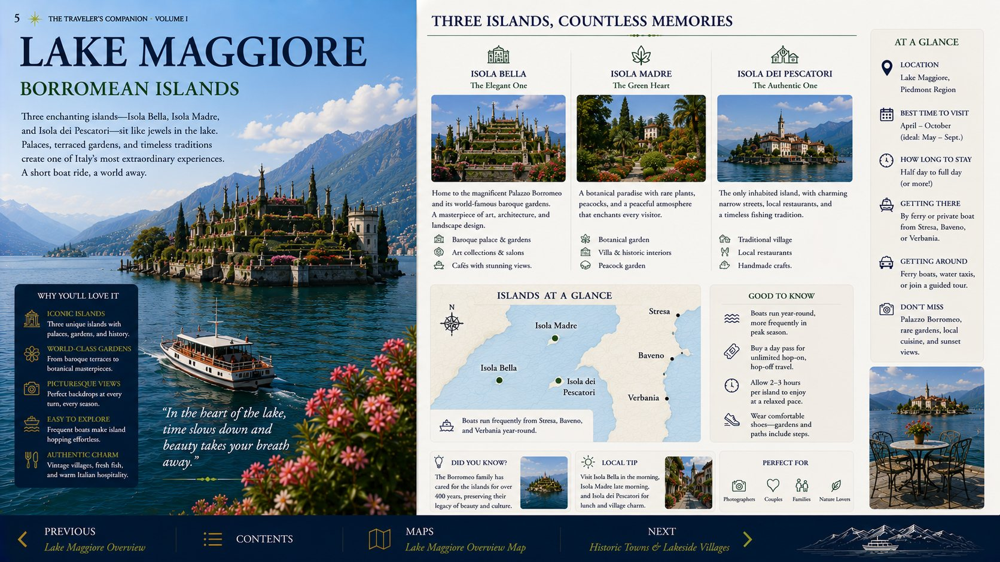
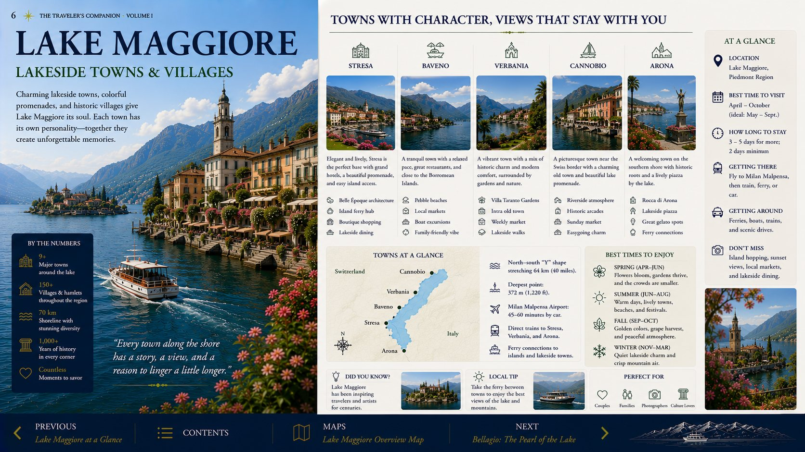
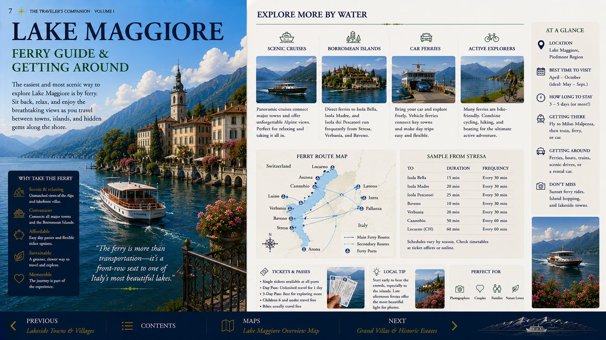
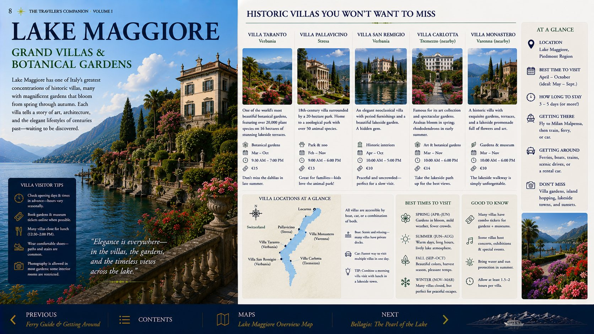
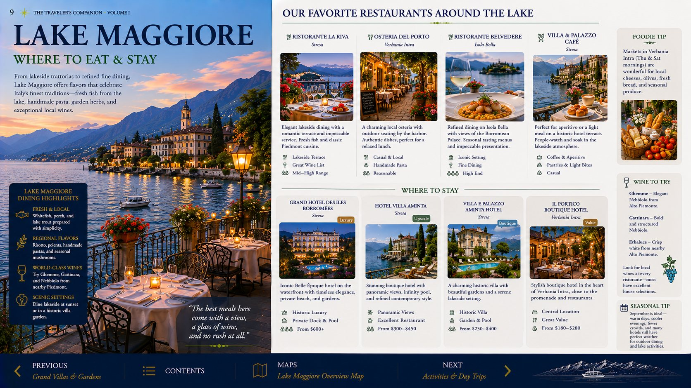
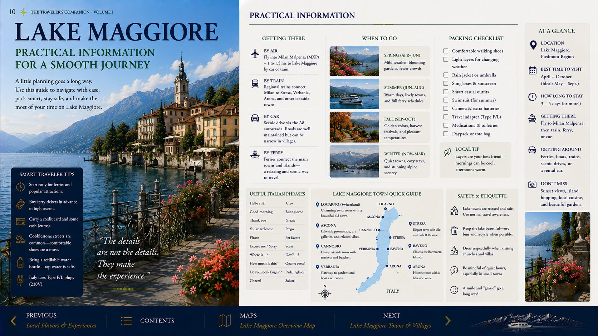
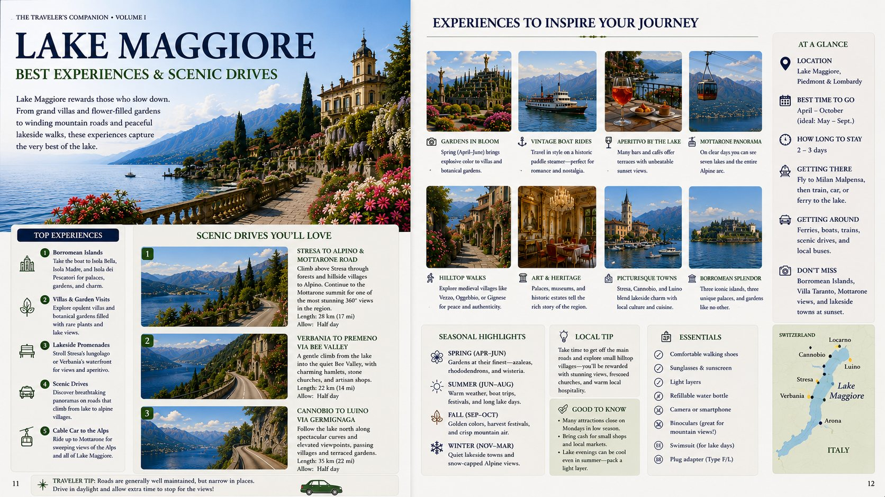
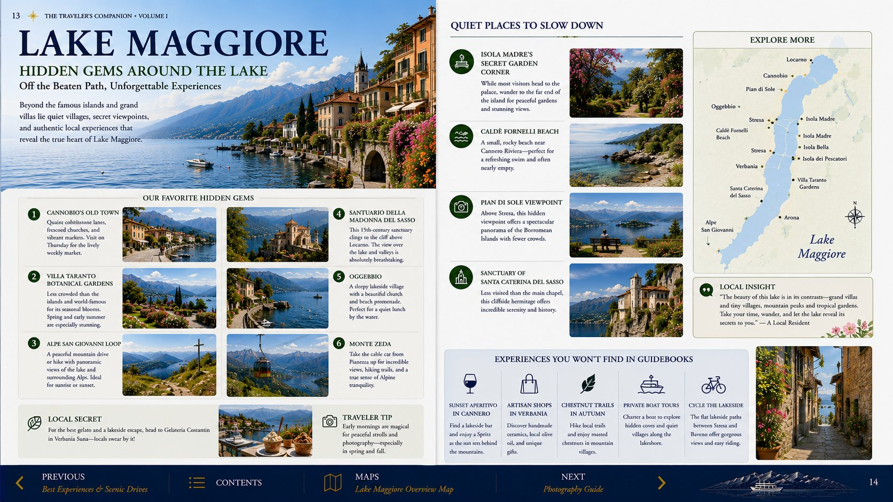

A graceful finish to the journey.
Use Stresa as the calm center, devote the full day to the islands, and protect the final morning for an unhurried airport transfer.
Lake Maggiore in One Minute
The essential Stresa, island and airport strategy.

Where to Stay
The chapter’s accommodation recommendations and why Stresa is the right final base.

Stresa
The promenade, ferry landing and elegant final-stop atmosphere.

Isola Bella
Palace, terraces and the lake’s most theatrical gardens.

Isola dei Pescatori
The best lunch stop and most village-like island.

Isola Madre
Quieter gardens and a relaxed finish to the island day.

Restaurant Recommendations
Curated dining in Stresa and on the islands.

Ferry Guide
The best island sequence and practical timetable strategy.

Gardens & Villas
The most rewarding landscapes and historic properties.

Local Cuisine
Lake fish, risotto, cheeses, pastries and regional specialties.

Practical Lake Maggiore
Parking, ferries, timing and crowd strategy.

Photography Guide
Morning light, island views and elegant evening scenes.

Don’t Miss
The essential experiences you would regret skipping.

Departure to Malpensa
Packing, fuel, rental-car return and airport timing.